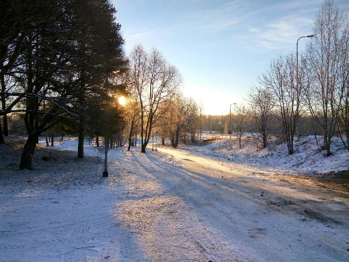
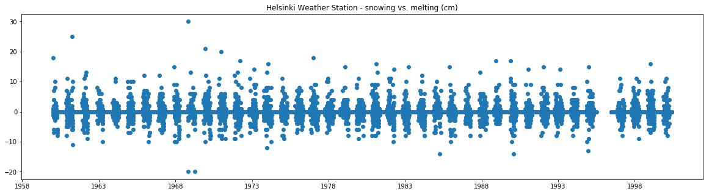
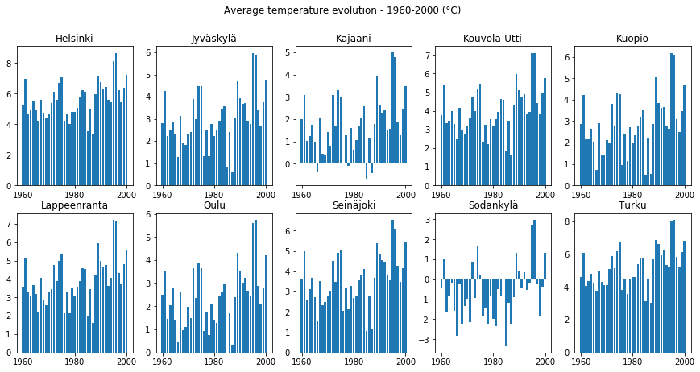
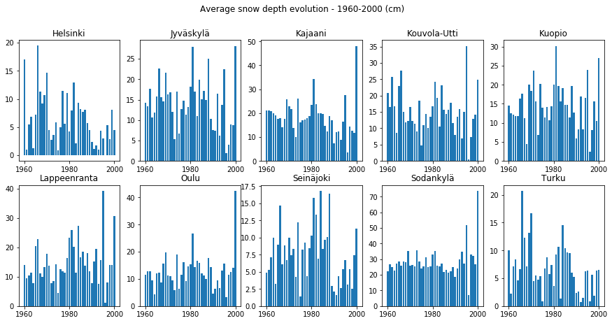

Is there less snow?

Analyzing the data of ten weather stations in Finland (1960-2000) reveals insights on snowing and the evolution of temperatures throughout the time.
The data provided by the
Finnish Institute of Meterology of snow and weather data, gives the opportunity to look at three questions over a 50 year period:
- Are temperatures on the rise?
- On average, is there less snow?
- Are there more extreme events?
All in all, each weather station observed a positive correlation between time and temperature across the period, but these are very small (r = 0.03 to 0.07)
The highest recorded net snowing in a day was in Turku with 45 cm (22 November 1989).
Regarding the correlation between snow depth and time, there is no conclusive correlation. We can observe certain decreasing patterns both visually and in terms of correlation in Turku, Kouvola, Helsinki, but this is not the case for other weather
stations.
Taking the example of one weather station (below), we can see a highly cyclical pattern concerning net snow gain/loss. There seems to be no real evolution both in the extremities nor in the yearly patterns.
We can see a hint of this in the graphs, but given the many outlier years, one cannot draw direct conclusions. The weather station that recorded the highest temperature in the dataset was Kuopio 35.0 °C (29 July 2010), whereas the coldest was Sodankylä
-49.5 °C (28 January 1999).
Location of weather stations. Note: the population density is higher in the south.
Weather station (Helsinki): A loss (snow melting) would result in a point below 0°, whereas snowing results in a point over 0°.
"Extreme weather includes unexpected, unusual, unpredictable, severe or unseasonal weather; weather at the extremes of the historical distribution" - Wikipedia.
Such events are also present in the dataset. For instance for Helsinki on 1 November 1968, 30 cm of snow surplus was recorded, whereas four days later, 20 cm melted in one day.
Considering the standard deviation by year, we observe that in all weather stations the standard deviation of the temperature has reduced. In that regard, weather observations were "more extreme" in the past than today.
Are temperatures on the rise?
Is there less snow?
Are there more extreme events?
Conclusion



While weather and climate are closely interlinked, it is false to attribute these results to climate change. The average temperatures have increased, while some stations record decreases in snowing/snow depth.